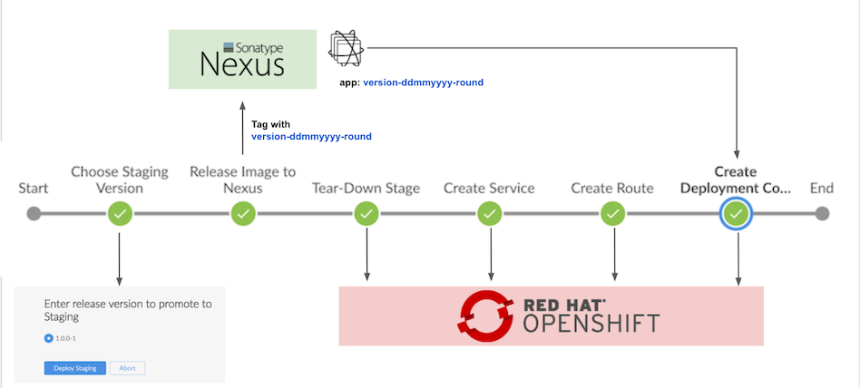
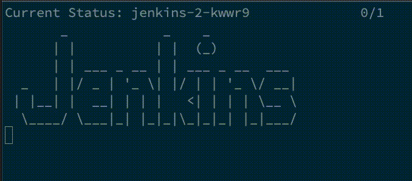
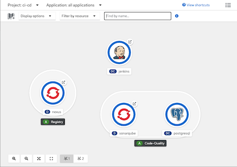
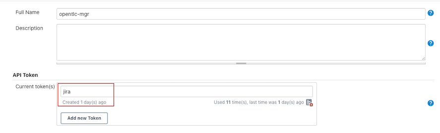
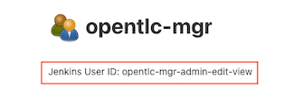
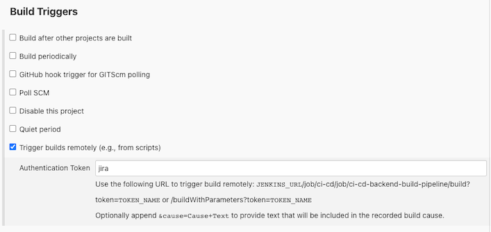
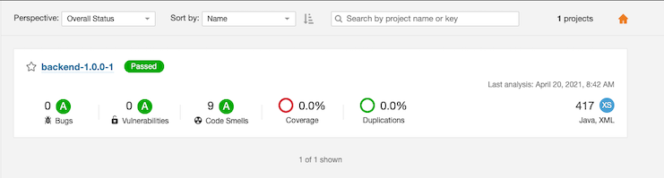

CI/CD with Jenkins
Overall Solution
Jenkins pipelines to demonstrate CI/CD process to build Quarkus application from source code to container image with version control by tag name and deploy application to Development, Staging, UAT and blue/green deployment to Production environment.
Remark:
Source code of Quarkus and Jenkins
Build and Deploy to Development Environment
- Build fast-jar Quarkus application
- Pull dependencies from Nexus
- Run unit test with JUnit and code quality with SonarQube
- Push container image to Nexus or internal registry
Create service, route and deploymentconfig in dev project

Deploy Staging Environment
- Select version to deploy to stage project
- Tag container image with version-DDMMYYYY-round
Tear down and deploy application to stage project

Deploy UAT Environment
- Select version to deploy to uat project. Only images with tag version-DDMMYYYY-round will be avaiable in list to deploy
- Tear down and deploy application to uat project
Deploy Production Environment
- Select version to deploy to prod project. Only images with tag version-DDMMYYYY-round will be avaiable in list to deploy
- Create deploymentconfig and service for blue and green version
- Create route
Select version to deploy and scale down previous version

Setup
Projects
Create 4 projects ci-cd, dev, stage, uat and prod
CI_CD=ci-cd DEV=dev STAGE=stage UAT=uat PROD=prod oc new-project $DEV --display-name="Development Environment" oc new-project $STAGE --display-name="Staging Environment" oc new-project $UAT --display-name="User Acceptance Test Environment" oc new-project $PROD --display-name="Production Environment" oc new-project $CI_CD --display-name="CI/CD Tools"Allow jenkins service account to managed dev, stage, uat and prod
oc policy add-role-to-user edit system:serviceaccount:${CI_CD}:jenkins -n ${DEV} oc policy add-role-to-user edit system:serviceaccount:${CI_CD}:jenkins -n ${STAGE} oc policy add-role-to-user edit system:serviceaccount:${CI_CD}:jenkins -n ${UAT} oc policy add-role-to-user edit system:serviceaccount:${CI_CD}:jenkins -n ${PROD}Allow dev, stage, uat and prod to pull image from ci-cd project (in case use internal image registry instead of Nexus)
oc policy add-role-to-group system:image-puller system:serviceaccounts:${DEV} -n ${CI_CD} oc policy add-role-to-group system:image-puller system:serviceaccounts:${STAGE} -n ${CI_CD} oc policy add-role-to-group system:image-puller system:serviceaccounts:${UAT} -n ${CI_CD} oc policy add-role-to-group system:image-puller system:serviceaccounts:${PROD} -n ${CI_CD}Remark: You can use bash script setup_projects.sh for all above steps.
Jenkins, SonarQube and Nexus
Setup
Run setup_ci_cd_tools.sh to setup Jenkins, SonarQube and Nexus
cd bin ./setup_ci_cd_tools.shSample output

Check Developer Console

Login to Nexus with user admin with password from the 1st line nexus_password.txt. You can change password to whatever you want
Check for Nexus's repositories

Jenkins will use user and password stored in secret nexus-credential
Check for nexus-credential
oc describe secret/nexus-credential -n ci-cdSample output
Name: nexus-credential Namespace: ci-cd Labels: <none> Annotations: <none> Type: Opaque Data ==== password: 48 bytes username: 8 bytes
Jenkins Slave
Create custom jenkins slave which contains maven 3.6, skopeo and nexus-cli by run setup_maven36_slave.sh
oc project ci-cd ./setup_maven36_slave.shCheck imagestream in project ci-cd
oc get is/maven36-with-tools
Jenkins Pipelines
Create pipelines
oc apply -f manifests/backend-build-pipeline.yaml -n ci-cd oc apply -f manifests/backend-release-pipeline.yaml -n ci-cd oc apply -f manifests/backend-release-uat-pipeline.yaml -n ci-cd oc apply -f manifests/backend-release-prod-pipeline.yaml -n ci-cdControl pipeline to use internal registry or Nexus by pipeline's parameter USE_INTERNAL_REGISTRY
env: - name: DEV_PROJECT value: dev - name: CICD_PROJECT value: ci-cd - name: BACKEND_URL value: https://httpbin.org/status/200 - name: NEXUS_SVC value: http://nexus.ci-cd.svc.cluster.local:8081 - name: NEXUS_REGISTRY_SVC value: nexus-registry.ci-cd.svc.cluster.local:5000 - name: NEXUS_REGISTRY value: nexus-registry-ci-cd.apps.cluster-a987.a987.example.opentlc.com - name: SONARQUBE_SVC value: http://sonarqube:9000 - name: NEXUS_SECRET value: nexus-credential - name: USE_INTERNAL_REGISTRY value: "false"Jenkins Remote API
Create token

Check for jenkins's user ID

Configure pipeline Trigger builds

Test
USERID=opentlc-mgr-admin-edit-view
TOKEN=117d9459d809be344f1823cbc1248fba09
JENKINS_URL=https://jenkins-ci-cd.apps.cluster-1516.1516.example.opentlc.com
curl -X POST -L -v --user $USERID:$TOKEN "$JENKINS_URL/job/ci-cd/job/ci-cd-backend-build-pipeline/buildWithParameters?token=jira&NEXUS_REGISTRY_SVC=nexus-registry.ci-cd.svc.cluster.local:5000&NEXUS_REGISTRY=nexus-registry-ci-cd.apps.cluster-a987.a987.example.opentlc.com"
Checkpoints
Maven build in pipeline pull dependencies from nexus
Code snippets
environment { mvnCmd = "mvn -s ./nexus_settings.xml " ... ... } ... script { sh "${mvnCmd} -Dquarkus.package.type=fast-jar -Dinternal.repo.username=${nexusUser} -Dinternal.repo.password=${nexusPassword} -DskipTests=true clean package" }Nexus's repository

SonarQube code quality checking
Code snippets
script { sh "${mvnCmd} sonar:sonar -Dinternal.repo.username=${nexusUser} -Dinternal.repo.password=${nexusPassword} -Dsonar.host.url=${env.SONARQUBE_SVC} -Dsonar.projectName=${imageName}-${devTag} -Dsonar.projectVersion=${devTag}" }Scan result

Container images is built and pushed to Nexus
Code snippets
openshift.withCluster() { openshift.withProject(env.CICD_PROJECT) { openshift.newBuild( "--name=${imageName}", "--to=${nexus_url}/${imageName}:latest", "--to-docker=true", "--push-secret=nexus-registry", "--strategy=docker", "--binary=true" ) } }Nexus image registry

Application is deployed with label version and tag

Possible improvement
- Change from deploymentconfig to deployment
- Change from OpenShift's template to kustomize
- Validate SonarQube result